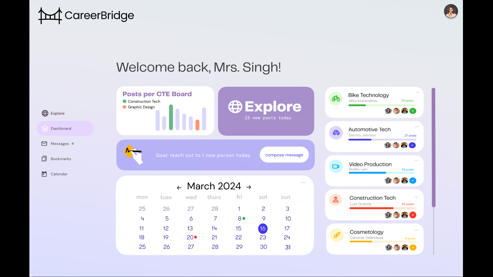

CareerBridge
2022-2023
UI/UX project. Career development website for students to begin exploring job pathways.
Learn more hereI was a user experience designer and human-centered design researcher for a system to connect students to career building experiences.
- Reserached and interviewed real-world populations to examine user groups and needs.
- Using a problem statement and user flow, created testable low and high fidelity wireframes/prototypes.
- Tested prototypes via heuristic evaluation by meeting with user groups in person and reviewing feedback.
